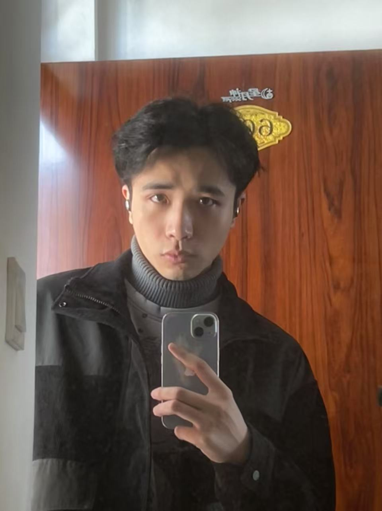
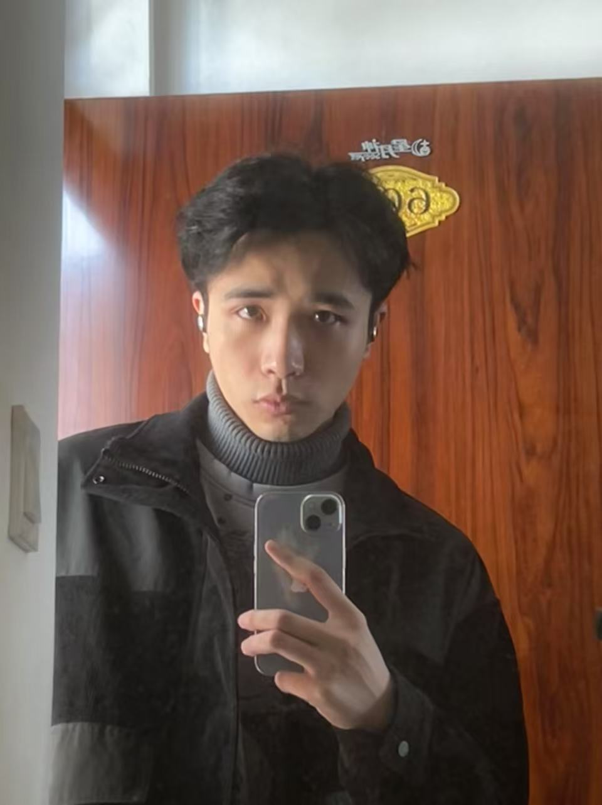

🎓 Education
🎓 教育经历
Harbin Engineering University
B.E. in Artificial Intelligence (School of Intelligent Science and Engineering)
09/2024 - 06/2027
GPA: 3.3/4.0 (87/100)
Ranking: 15/186
Key courses: Stochastic processes (90), matrix theory (79), embedded systems and applications (95), deep learning and applications (97)
绩点: 3.3/4.0 (87/100)
排名: 15/186
核心课程: 随机过程(90), 矩阵论(79), 嵌入式系统及应用(95), 深度学习及应用(97)
Hunan Agricultural University
B.E. in Internet of Things Engineering (College of Information and Intelligence)
09/2020 - 06/2024
GPA: 3.76/4.0 (90.69/100)
Ranking: 1/99
Key courses: Computer Network (94), Data Structure (99), Operating System (93), Analog Electronic Technology (99), C Language Programming (98), Advanced Mathematics A1 (99), Advanced Mathematics A2 (95), Probability and Statistics A (99)
绩点: 3.76/4.0 (90.69/100)
排名: 1/99
核心课程: 计算机网络（94），数据结构（99），操作系统（93），模拟电子技术（99），C语言程序设计（98），高等数学A1（99），高等数学A2（95），概率统计A（99）
🔬 Research & Internship
嵌入式BSP开发实习生
11/2023 - 08/2024
嵌入式BSP开发实习生
11/2023 - 08/2024
- 应用技术
- C语言编程、MCU开发、嵌入式BSP开发
- 主要工作
- 视频驱动模块项目（项目架构：MCU+FPGA）
- 实现MCU通过EXMC接口访问读写FPGA寄存器
- 通过MCU对视频信号输出与切换的控制功能
- 根据客户产品需求，设计并开发OSD多级菜单功能
- OEM项目（项目架构：飞腾D2000+FPGA+MCU）
- 移植FreeRtos至MCU、适配开源框架Letter-Shell作为MCU的shell方案
- 开发MCU的ADC、IIC、WDG、UART等外设，实现多路ADC采集、HTG8515驱动等功能
- 与团队FPGA工程师沟通协作，在软件BSP层实现Aurora、SRIO、RS422、XDAC、GPIO、DRAM外设驱动并进行测试
- 底板项目（主板的辅助性功能板）
- 开发MCU的GPIO、SPI外设， 编写AD5668芯片驱动以控制输出模拟量、离散量供主板使用
- 采用IIC作为主板CPU和底板MCU之间的通信方式，实现对CPU通过IIC总线打包发送来的数据包进行解析的功能
- 项目总结
- 实习期间获得一次30%的涨薪
- 绩效排名前列，实习结束被大屏展示表彰并获得唯一的优秀实习生奖励
无人机创新实验室组长
06/2022 - 10/2023
无人机创新实验室组长
06/2022 - 10/2023
- 参与项目
- 基于 YOLOV5 的四轴无人机路面破损检测系统实现
- 无人机边缘端部署YOLOV5算法准确快速识别地面破损
- 无人机根据航点设置进行自主避障巡航
- 开发基于WEB的地面站系统，涵盖多无人机控制、任务下发、监测数据可视化功能
- 自主巡航消防无人机
- 基于开源匿名飞控平台，修改开源代码中底层飞控速度控制逻辑以保证程控下的接管控制
- 开发任务流程执行框架，以实现控制代码的复用性、可维护性
- 解析获取Jetson nano通过串口发来的定位数据，使用位置式PID控制无人机速度完成巡航任务
- 在Jetson nano上部署yolov5模型，巡航途中实时识别地面特征火源，将识别数据回传主控，并加入次数确认逻辑以避免误检情况，对火源的画面偏移量进行低通滤波处理，使用单P控制对准悬停至火源上方
- 基于时间调度器实现设备断线检测机制，主控根据掉线状态执行对应的异常处理逻辑，增强系统的鲁棒性
- 工作表现
- 第十六届全国大学生电子设计竞赛全国二等奖
🏆 Awards
- Huawei Software Elite Challenge 2025 Top 32 in the division 🥉 04/2025
- The 16th National College Students' Electronic Design Competition National Second Prize 🥈 08/2023
- The Thirteenth Blue Bridge National Software and Information Technology Professional Talent Competition Second prize of provincial 🥈 08/2022
🏆 获奖经历
- 2025华为软件精英挑战赛 京津冀东北赛区32强(区域赛二等奖) 🥉 11/2023
- 第十六届全国大学生电子设计竞赛 全国二等奖 🥈 02/2024
- 第十三届蓝桥杯全国软件和信息技术专业人才大赛 省级二等奖 🥈 11/2022
🛠️ Skills
- Programming languages:
- Python (Proficient)
- C/C++ (Proficient)
- Skill-related skills:
- Mastered ARM series MCU development, hardware PCB design, and could independently complete the system design and implementation of hardware and software:
- Familiar with UART/I2C/SPI/CAN/DMA and RTOS/Linux operating system principles:
- Understood Linux under the character device driver development and LinuxC application development:
- Familiar with Linux multi-thread and multi-process programming and Linux process communication technology:
- Understood HTTP, TCP/UDP, IP protocols:
- Understood Linux I/O multiplexing technology, could use Socket for network programming, and had high concurrency server development experience:
- Familiar with Python, Shell, CMake, Makefile, etc. and Qt graphic development tools:
- Skilled in using GIT to track and manage project code, with experience in enterprise-level product design, verification, development, testing, and delivery:
🛠️ 技能
- 编程语言:
- Python (熟练)
- C/C++ (熟练)
- 技术相关:
- 掌握 ARM 系列 MCU 的开发、硬件 PCB 的制作、能够独立完成控制系统的软硬件设计和实现：
- 熟悉 UART/I2C/SPI/CAN/DMA 等外设和 RTOS/Linux 操作系统原理：
- 了解 Linux 底层字符设备驱动开发、LinuxC应用开发；
- 熟悉 Linux 多线程、多进程编程和 Linux 进程间通信技术；
- 了解 HTTP、TCP/UDP、IP 等常见协议；
- 理解 Linux下I/O 复用技术，能够利用 Socket 进行网络编程，有高并发服务器开发经验；
- 熟悉 Python、Shell、CMake、Makefile 等其他编程语言和 Qt 图形化开发工具；
- 熟练使用 GIT 来跟踪和管理项目代码，具有企业级别产品设计、验证、开发、测试、交付经验；